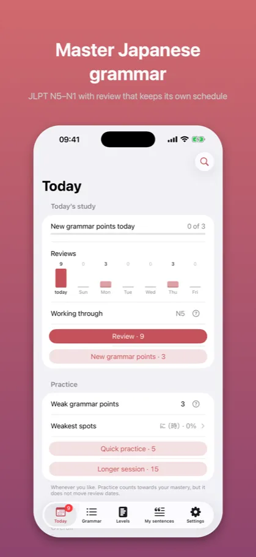
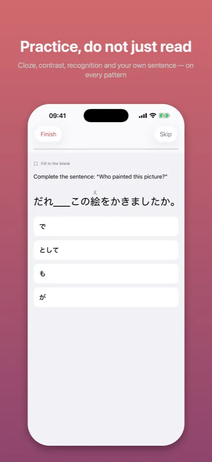
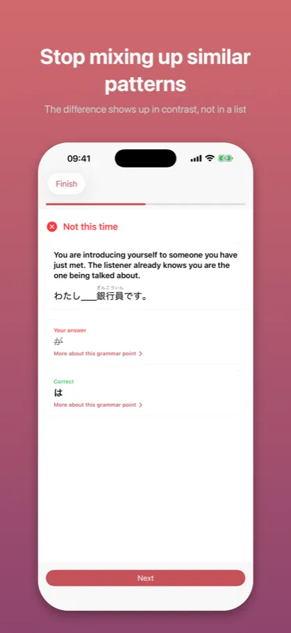
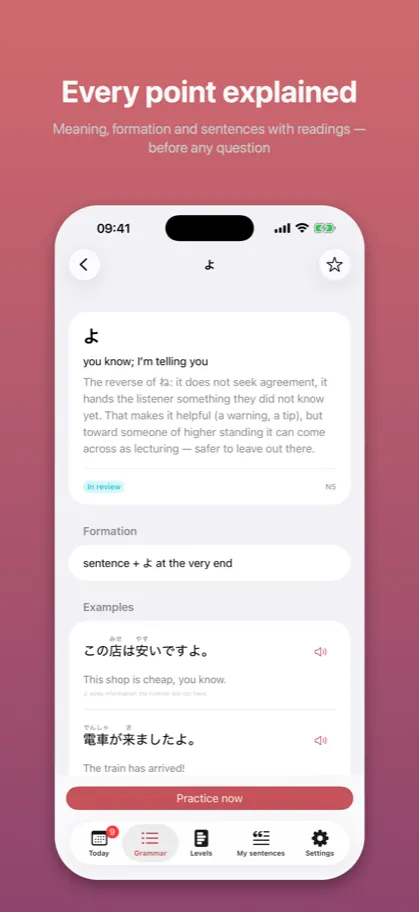
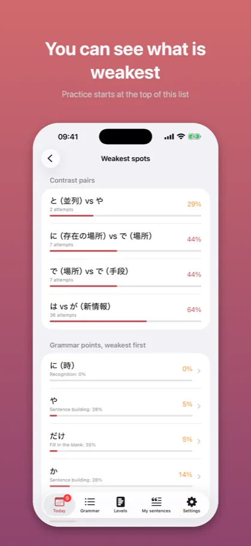

Kaname: Japanese Grammar要
JLPT practice: N5 N4 N3 N2 N1
App Store →Free app with an in-app purchase
Mixing up similar patterns? See them side by side in real sentences, not just in prose. Plus scanning Japanese from a photo and an AI check on sentences you write.
What it looks like
{kind=link}

JLPT N5–N1 with review that keeps its own schedule
{kind=link}

Cloze, contrast, recognition and your own sentence — on every pattern
{kind=link}

The difference shows up in contrast, not in a list
{kind=link}

Meaning, formation and sentences with readings — before any question
{kind=link}

Practice starts at the top of this list
Description from the store
Kaname teaches Japanese grammar the way real command of a language works: it does not ask whether you remember a rule, but whether you can use it.
The whole JLPT range – N5 through N1.
FOUR INDEPENDENT COMPETENCES
Every grammar point carries four separate mastery scores:
- Recognition – what the pattern adds to a sentence
- Cloze – whether you pick the right form in a gap
- Contrast – whether you tell it apart from a confusable one
- Production – whether you use it yourself, unprompted
A session steers questions to wherever you are weakest. A pattern you recognise perfectly but keep confusing with a similar one will get mostly contrast questions. That is what separates Kaname from ordinary flashcards.
CONTRAST PAIRS
なら or たら? そう or らしい? はず or わけ? The app puts confusable patterns side by side in concrete situations and explains every time why this form is the natural one – and the other is not.
SPACED REVIEW
Intervals of 4 hours / 1 / 4 / 7 / 14 / 30 / 90 / 180 days, adjusted to your results. “Mastered” requires a high score in every competence that can be tested for that pattern, plus three successful reviews spread over at least three weeks. One good day is not enough.
STUDY PLAN
New patterns from a higher level appear only once the previous level has settled into review. Instead of piling on material, the app makes sure the foundation actually holds.
SCAN JAPANESE FROM A PHOTO
Saw a sentence in a manga or a textbook? Take a photo. The text is recognized on your phone – the photo is never sent or saved anywhere. You pick a sentence from the recognized lines, correct it if needed, and save it.
CATCH YOUR OWN SENTENCES
Save a sentence you caught and pin it to the pattern you are practising – it comes back in your reviews as your own example. The catalog pattern stays canonical; your sentence sits beside it as a personal example.
AI ANALYSIS – SEPARATE, AND ONLY IF YOU ASK
Write your own sentence and the model tells you what exactly is off and why, instead of a bare “wrong”. It also spots grammar patterns in text you paste in.
This is an extra layer and entirely optional. Without it the app counts progress and schedules review exactly the same; every call happens on your explicit request, with the remaining count shown next to the button.
WHAT IS FREE
The whole of JLPT N5, with its contrast pairs and all four exercise types. No time limit, no session limit, no ads. Plus a few AI analysis calls each month.
WHAT YOU CAN BUY
Levels N4, N3, N2 and N1 – one at a time, in bundles, or all at once. A one-time purchase, no subscription and no account; access does not expire.
Anyone who bought Premium earlier gets N2 and N1 at no extra cost. The promise made in this app's description is kept.
AI Analysis is a separate subscription, because it is the only part that costs something every time it is used: PLN 14.99 monthly or PLN 119.99 yearly, auto-renewing, cancellable in your Apple ID settings. It does not cover JLPT levels and never will.
PRIVACY
- No account, no sign-in
- No ads, no tracking
- No analytics, no third-party libraries
- All progress stays on your device
- Study, review and scanning work without an internet connection
The network is used only by AI analysis, and only when you invoke it: the practiced pattern and the sentence you wrote go to the server. Your study history does not, nothing about you does, and a photo never does – the text in a photo is read by the phone itself.
Explanations and example sentences were written specifically for this app.
Kaname (要) is the rivet that holds a folding fan together – hence the figurative “the crux, the thing that matters”. Because that is what this is about: the difference that decides.
TERMS
Terms of Use (EULA): https://www.apple.com/legal/internet-services/itunes/dev/stdeula/
Privacy Policy: https://jakub-dwojak-aseity.github.io/app-policies/kaname/1.2/en/privacy.html
The description above is the same text that stands on the App Store product page – it comes from the same file.
App Store →Free app with an in-app purchase
Common questions
What does Kaname teach?
Kaname teaches Japanese grammar the way real command of a language works: it does not ask whether you remember a rule, but whether you can use it.
The whole JLPT range – N5 through N1.
What does Kaname cost?
The whole of JLPT N5, with its contrast pairs and all four exercise types. No time limit, no session limit, no ads. Plus a few AI analysis calls each month.
Levels N4, N3, N2 and N1 – one at a time, in bundles, or all at once. A one-time purchase, no subscription and no account; access does not expire.
Does it work without an account or a network?
- No account, no sign-in
- No ads, no tracking
- No analytics, no third-party libraries
- All progress stays on your device
- Study, review and scanning work without an internet connection
The network is used only by AI analysis, and only when you invoke it: the practiced pattern and the sentence you wrote go to the server. Your study history does not, nothing about you does, and a photo never does – the text in a photo is read by the phone itself.
Documents
The other apps
- Bunmyaku: Japanese Reading — Vocabulary, kanji, furigana
- Katsuyokei: Conjugation — Verbs, adjectives and drills
- Joshi: Japanese Particles — Grammar drills for the JLPT
- Kazoekata: Japanese Counters — Counting, kanji and drills
- Kuzushi: Casual Japanese — Anime, drama and slang
- Shindan: Japanese Level Test — JLPT placement: N5 N4 N3 N2 N1
- Keigo: Polite Japanese — Formal Japanese for work
- Kifuku: Japanese Pitch Accent — Pronunciation and listening
- Onomatope: Japanese Mimetics — Manga and anime vocabulary